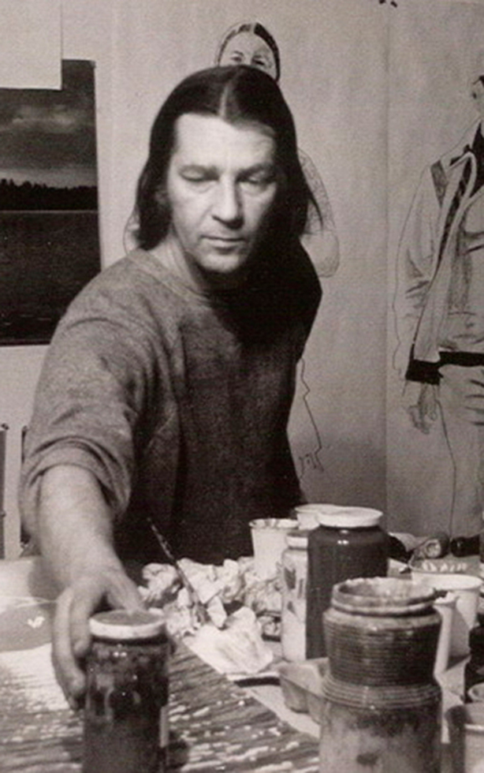
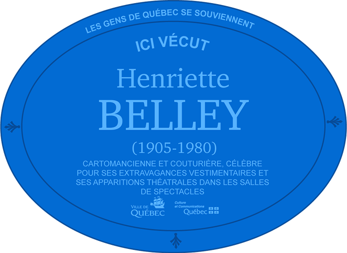

Fiche personnage
EdmundAlleyn
Notre biographie

Edmund Alleyn est né à Québec en 1931. Il est un artiste peintre. Edmund Alleyn a étudié à l'école des beaux-arts de Québec, auprès de Jean-Paul Lemieux et Jean Dallaire. Il séjourne en France de 1955 à 1970. De retour au Québec, Alleyn est frappé par le changement que les années ont opéré sur son pays et le devenir socio-politique du territoire entre dans ses préoccupations artistiques. Parallèlement, il obtient un poste de professeur au département d'arts visuels de l'Université d'Ottawa, où il enseignera durant plus de 15 ans. Aujourd’hui, les oeuvres de Alleyn sont exposés régulièrement dans les Musées et les galeries, tant au Québec qu'en Ontario, et à New York.
Plaque commémorative
Ici vécut Edmund Alleyn (1931-2004). Peintre et artiste polyvalent, créateur d'une œuvre originale et en constante mutation.

Localisation
Arrondissement : La Cité-Limoilou

Quartier : Vieux-Québec—Cap-Blanc—colline Parlementaire
Adresse : 65, rue Wolfe-Montcalm
Capsule sonore
Transcription textuelle
Tout jeune, le peintre Edmund Alleyn vivait près du fleuve. L’eau, la lumière, les voyages ont nourri son imagination. Esprit libre, il explorait toutes les formes d’expression. Allons à la rencontre de cet artiste qui était en avance sur son temps.
Mon père est né en 1931 à Québec de parents moitié irlandais, moitié anglais donc vraiment la souche anglophone du Québec...
Crédits de la narration
Jennifer Alleyn est cinéaste. Elle s’investit dans la transmission de l’œuvre de son père, entre autres par la publication d’un site Internet et la réalisation de documentaires.